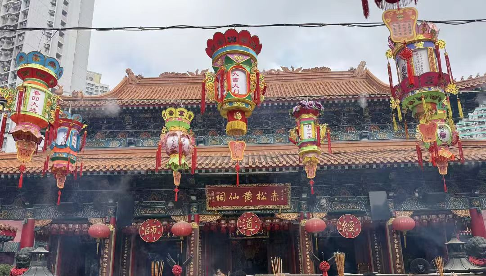

传奇：黄大仙祠位于香港九龙黄大仙区竹园村，是香港最著名、香火最鼎盛的道教宫观之一，也是香港旅游的重要地标。祠庙主祀道教仙人黄大仙（黄初平），相传黄大仙是晋代浙江金华人，15岁得道成仙，有"叱石成羊"的神通。黄大仙祠始建于1921年，由广东西樵山普庆祖坛的道长梁仁庵等人创立，最初在湾仔设坛，1925年迁至现址。经过百年发展，黄大仙祠已成为占地18000平方米的大型宗教建筑群，融道教、佛教、儒家于一体，每年吸引数百万信众和游客前来参拜。祠庙以"有求必应"闻名，是香港最具代表性的民间信仰中心，也是香港唯一可以举行道教婚礼的庙宇。2010年，黄大仙祠被列为香港法定古迹。
核心看点：
游览攻略：
交通信息：黄大仙祠位于九龙黄大仙竹园村2号。地铁：观塘线黄大仙站B2或B3出口，步行约3分钟。巴士：多条巴士路线经黄大仙中心，包括1、2F、3C、11、61X、62X、74A、75X、84M、85C、85M、89、89B、211等。小巴：有多条绿色小巴路线可达。开放时间：每日7:00-17:30（从心苑8:00-16:30）。免费参观，但进入从心苑需捐款（约港币2元）。周边景点有啬色园道教文化中心（毗邻）、南莲园池（1公里）、志莲净苑（1公里）、钻石山荷里活广场（1.5公里）、九龙寨城公园（3公里）。距香港国际机场35公里，车程约40分钟；距九龙站5公里，车程15分钟。建议与啬色园道教文化中心、南莲园池、志莲净苑组合游览。
黄大仙传说：黄大仙，原名黄初平，晋代浙江金华人。相传他15岁时在金华山中牧羊，遇道士葛洪，授以道术，得道成仙，有"叱石成羊"的神通。其兄黄初起寻找他40年，后在金华山中相遇，问羊何在，初平叱石成羊。兄弟二人一同修炼，双双成仙。黄大仙信仰在浙江金华一带流传，后随移民传到广东、香港。
啬色园创立：1915年，广东南海西樵山普庆祖坛的道长梁仁庵等人，奉黄大仙像到香港，最初在湾仔设坛。1921年，梁仁庵、梁钧转、王泽生等人创立"啬色园"，取"啬"为珍惜物力，"色"为形形式式，意为珍惜世间万物。啬色园是黄大仙祠的管理机构，也是香港著名的慈善团体。
祠庙发展：①1925年：黄大仙祠从湾仔迁至竹园现址，初建简陋；②1956年：开始大规模扩建，建成主殿、三圣堂等；③1973年：建成从心苑，增添园林景观；④1999年：建成月老及佳偶天成神像；⑤2010年：被列为香港法定古迹。百年间，黄大仙祠从简陋道坛发展为大型宗教建筑群。
三教融合：黄大仙祠的特色是儒释道三教融合。①道教：主祀黄大仙，供奉太上老君、吕祖等；②佛教：供奉释迦牟尼佛、观音菩萨等；③儒家：供奉孔子，提倡忠孝仁义。三教融合体现了香港多元宗教文化的包容性，也符合黄大仙"普济劝善"的教义。
慈善事业：啬色园秉承"普济劝善"宗旨，开展多项慈善事业。①医疗：创办黄大仙医院、啬色园医院等；②教育：创办啬色园主办可誉中学、可正小学等学校；③安老：创办安老院、护理院等；④赈灾：参与内地及海外赈灾。慈善事业使黄大仙祠不仅是宗教场所，也是慈善机构。
现代转型：黄大仙祠在现代社会中不断创新。①管理：采用现代化管理，提高服务水平；②文化：举办道教文化节、讲座、展览等；③旅游：开发旅游产品，吸引游客；④科技：建立网站、APP，提供线上服务。黄大仙祠与时俱进，保持活力。
总体布局：黄大仙祠为典型的岭南庙宇布局。①轴线：南北中轴线，入口牌坊-主殿-三圣堂；②院落：多进院落，主殿前有广场，后有园林；③园林：从心苑为附属园林，有亭台水榭；④功能分区：宗教区、园林区、服务区。布局严谨，功能分明。
建筑形式：黄大仙祠建筑形式多样。①主殿：重檐歇山顶，五开间；②三圣堂：硬山顶，三开间；③孟香亭：八角攒尖顶；④牌坊：三间四柱冲天式；⑤九龙壁：琉璃照壁。形式丰富，主次分明。
装饰艺术：黄大仙祠装饰丰富多彩。①彩绘：梁枋、斗拱、藻井有精美彩绘；②木雕：门窗、雀替、挂落有精细木雕；③石雕：石狮、石柱、石栏杆有浮雕、圆雕；④琉璃：九龙壁用琉璃瓦砌成，色彩鲜艳。装饰体现了岭南艺术的特色。
园林艺术：从心苑是黄大仙祠的园林精华。①理水：有池塘、溪流、瀑布；②叠山：有假山、石景；③建筑：有亭、台、楼、阁、桥；④植物：有松、竹、梅、莲等。园林体现了"虽由人作，宛自天开"的理念。
建筑材料：黄大仙祠用材讲究。①木材：用杉木、樟木等；②石材：用花岗岩、大理石等；③砖瓦：用青砖、琉璃瓦；④灰塑：用石灰、糯米、红糖等调制。材料保证建筑的耐久性。
建筑特色：黄大仙祠的建筑特色鲜明。①三教融合：儒释道三教建筑共存；②岭南风格：镬耳山墙、彩色玻璃、灰塑等；③现代元素：融入现代建筑材料和技术；④园林结合：宗教建筑与古典园林结合。特色体现了香港文化的多元性。
黄大仙信仰：黄大仙是道教仙人，也是民间信仰的神祇。①神通：有"叱石成羊"、"治病救人"、"预知祸福"等神通；②职能：主管医药、财运、姻缘、学业等；③形象：头戴道冠，手持拂尘，慈眉善目；④信仰圈：信徒遍布香港、广东、东南亚乃至海外。黄大仙以"有求必应"闻名。
祭祀活动：黄大仙祠有丰富的祭祀活动。①日常祭拜：信众上香、供果、叩拜；②法会：有诞辰法会、祈福法会、超度法会等；③诞辰：黄大仙宝诞（农历八月廿三）最隆重；④节日：春节、端午、中秋等传统节日有祭祀。祭祀是信仰活动的主要形式。
求签解签：求签是黄大仙祠的特色。①求签：在签筒摇出签支，每支签有编号；②签文：签文为诗句，有吉凶寓意；③解签：解签师傅根据签文解答疑惑；④灵签：黄大仙灵签共100支，分上上、上吉、中吉、中平、下下等。求签是香港重要的民俗活动。
祈福仪式：信众在黄大仙祠有多种祈福方式。①上香：一般上三支香，代表敬天、敬地、敬人；②供品：供奉水果、鲜花、糕点等；③祈福带：书写愿望挂在祈福架上；④点灯：在灯亭点平安灯、智慧灯等。祈福表达了信众的愿望。
民俗活动：黄大仙祠是民俗活动中心。①抢头香：春节子时，信众争上"头炷香"；②转运：正月期间，信众"摄太岁"、"拜太岁"；③姻缘：年轻人在月老前祈求姻缘；④求学：学生在文昌帝君前祈求学业进步。民俗活动丰富多彩。
社会功能：黄大仙祠在社会中发挥重要作用。①心理慰藉：为信众提供精神寄托；②社区凝聚：凝聚信众，形成社区；③文化传承：传承道教文化、民俗文化；④慈善公益：开展医疗、教育、安老等慈善事业。寺庙是社会的稳定器。
宗教价值：黄大仙祠是香港最重要的宗教场所。①道教中心：香港最大的道教宫观；②三教融合：儒释道三教共处的典范；③信仰中心：数百万信众的精神寄托；④宗教活动：举办法会、祭祀、婚礼等。黄大仙祠是香港宗教文化的代表。
文化价值：黄大仙祠是香港文化的象征。①民俗文化：求签、解签、祈福等民俗的载体；②建筑文化：岭南建筑艺术的代表；③园林文化：古典园林艺术的体现；④慈善文化："普济劝善"精神的实践。黄大仙祠是香港文化的"活化石"。
艺术价值：黄大仙祠是艺术的宝库。①建筑艺术：布局严谨，形式优美；②雕塑艺术：木雕、石雕、灰塑技艺精湛；③绘画艺术：彩绘色彩鲜艳，构图巧妙；④园林艺术：从心苑设计精巧，意境深远。黄大仙祠是"艺术的博物馆"。
社会价值：黄大仙祠在社会中发挥重要作用。①慈善事业：创办医院、学校、安老院等；②社区服务：为社区提供各种服务；③心理辅导：为信众提供心理慰藉；④旅游经济：吸引游客，促进经济。黄大仙祠是社会的稳定器。
旅游价值：黄大仙祠是香港重要的旅游景点。①地标景点：香港旅游的必到之处；②文化体验：体验香港民俗文化；③宗教旅游：了解道教文化和三教融合；④摄影热点：建筑、园林、民俗活动适合摄影。黄大仙祠每年吸引数百万游客。
保护与传承：黄大仙祠得到科学保护。①法律保护：2010年列为香港法定古迹；②规划保护：编制保护计划，定期维护；③管理保护：啬色园专业管理，保持庙宇整洁；④研究展示：开展研究，出版刊物，举办展览；⑤教育推广：举办讲座、导览，传播道教文化；⑥社区参与：社区居民参与保护，形成保护网络。黄大仙祠的保护经验，为都市庙宇保护提供了成功范例。